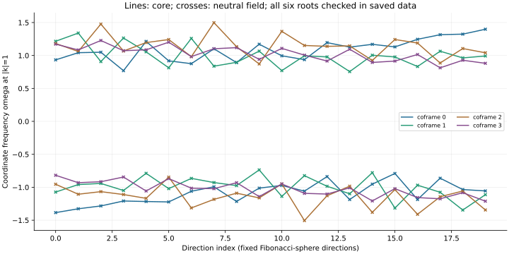
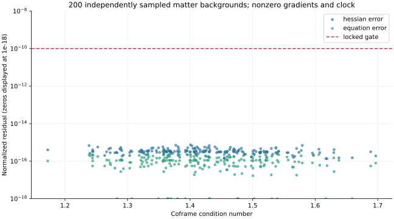
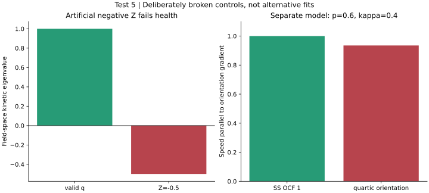

# Signal Space / GROSS Test 5 Technical completion: completed; bounded classification: pass. Run: run-249e8dbffbce02b4; analysis: analysis-0001-b014dca8. Solver commit: 07f0f1a47d752e730d4bc97cbf748351ca966dc0; renderer commit: 07f0f1a47d752e730d4bc97cbf748351ca966dc0 200 seeded invertible coframes with nonzero core/neutral gradients and clock fields; six real matter fields, 20 directions and two roots each. Natural units c=hbar=m=M0=1. The Hermitian coframe and four-dimensional domain are assumptions of SS OCF 1. Matter Hessian residual 7.43049e-16; equations 4.88386e-16; characteristic residual 1.76634e-15. Gravity: flat linearized harmonic-gauge TT symbol/gauge/Hamiltonian/momentum constraint residual 3.43045e-16. Nonlinear Einstein constraints and evolution were not evaluated. Negative Z and separately named quartic orientation actions are failure controls. Characteristic agreement follows the chosen universal metric coupling; it is an implementation audit, not empirical support for emergence. No clock, detector record, boundary/continuum convergence, stress-energy conservation in evolution, or nonlinear gravity solution is claimed. Next: Test 6 bound-clock radial profile/eigenmode screen in the flat decoupling limit. Compare branches and trapping removed before long reception protocols. ## characteristic-surfaces Question: Do all six matter perturbations share the same coframe null roots in a drifting frame? Reading: The six saved roots coincide across 20 directions on 200 coframes; maximum null-polynomial/root residual 1.77e-15. Coordinate drift differs across coframes. Significance: The action implementation retains the selected common matter principal cone even in shifted coordinate frames. Limitation: Only four coframes and two of six fields are displayed; all saved sectors enter the check. Local frozen coefficients do not establish a metric derived from microscopic reception. ## action-audit Question: Do action derivatives agree with the written field equations on nonzero local jets? Reading: Maximum Hessian residual 7.43e-16; equation residual 4.88e-16; operator metric residual 8.88e-16 against 1e-10. Significance: Independent action polarization and complex-step force distinguish the written equations from a copied principal matrix. Limitation: Finite smooth local jets; no on-shell solution, spatial grid, long-time conservation test or nonlinear gravity constraint solution. ## failure-controls Question: Do a negative neutral kinetic coefficient and a quartic orientation term reveal different failure modes? Reading: Negative Z=-0.5 fails kinetic positivity; separately versioned quartic orientation action gives speed 0.934947 versus metric speed 1. Significance: The audit can detect both a bad kinetic sign and an extra material characteristic that a common coordinate shift cannot remove. Limitation: The quartic term is excluded from SS OCF 1 and tested on one flat static gradient. It neither proves topology protection nor exhausts all constitutive alternatives.


